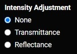
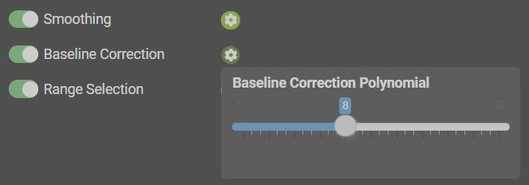
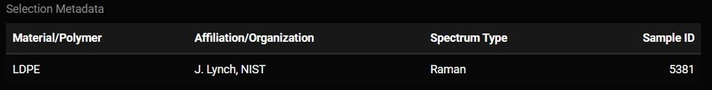
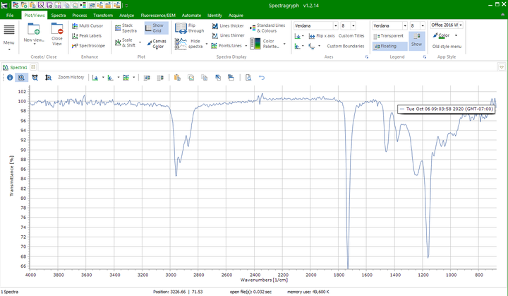

Open Specy Tutorial
Jessica Meyers, Jeremy Conkle, Win Cowger, Zacharias Steinmetz, Andrew Gray, Chelsea Rochman, Sebastian Primpke, Jennifer Lynch, Hannah Hapich, Hannah De Frond, Keenan Munno, Bridget O’Donnell
2022-12-24
Source:vignettes/sop.Rmd
sop.RmdDocument Overview
Open Specy Raman and (FT)IR spectral analysis tool for plastic
particles and other environmental samples. Supported features include
reading spectral data files (.asp, .csv, .jdx, .spc, .spa, .0),
smoothing spectral intensities with smooth_intens(),
correcting background with subtr_bg(), and identifying
spectra using an onboard reference library. Analyzed spectra can be
shared with the Open Specy community. A Shiny app is available via
run_app() or online at https://openanalysis.org/openspecy/.
This document outlines a common workflow for using Open Specy and highlights some topics that users are often requesting a tutorial on. If the document is followed sequentially from beginning to end, the user will have a better understanding of every procedure involved in using Open Specy as a tool for interpreting spectra. It takes approximately 45 minutes to read through and follow along with this standard operating procedure the first time. Afterward, knowledgeable users should be able to thoroughly analyze individual spectra at an average speed of 1 min-1.
Spectroscopy Basics
Here we will describe the basic workflow of spectral analysis in maximum 3 paragraphs.
Open Specy Fundamentals
Viewing and Sharing Spectra
To get started with the Open Specy user interface, access https://openanalysis.org/openspecy/ or start the Shiny GUI directly from R typing
run_app()Then click the Upload File tab at the top of the page.

Accessibility is extremely important to us and we are making strives to improve the accessibility of Open Specy for all spectroscopists. Please reach out if you have ideas for improvement.
We added a Google translate plugin to all pages in the app so that you can easily translate the app. We know that not all languages will be fully supported but we will continue to try and improve the translations.
Download a test dataset

If you don’t have your own data to use right away, that is ok. You can download test data to try out the tool by clicking on the test data button. A .csv file of HDPE Raman spectrum will download on your computer. This file can also be used as a template for formatting .csv data into an Open Specy accepted format. The following line of code does the same:
data("raman_hdpe")Choose whether to share your uploaded data or not

Before uploading, indicate if you would like to share the uploaded data or not using the slider. If selected, any data uploaded to the tool will automatically be shared under CC-BY 4.0 license and will be available for researchers and other ventures to use to improve spectral analysis, build machine learning tools, etc. Some users may choose not to share if they need to keep their data private. If switched off, none of the uploaded data will be stored or shared in Open Specy.
Upload/Read Data
Open Specy allows for upload of .csv, .asp, .jdx, .0, .spc, and .spa files. .csv files should always load correctly but the other file types are still in beta development, though most of the time these files work perfectly. It is best practice to cross check files in the proprietary software they came from and Open Specy before use in Open Specy. Due to the complexity of these file types, we haven’t been able to make them fully compatible yet. If your file is not working, please contact the administrator and share the file so that we can get it to work.
For the most consistent results, files should be converted to .csv format before uploading to Open Specy. The specific steps to converting your instrument’s native files to .csv can be found in its software manual or you can check out Spectragryph, which supports many spectral file conversions (see Mini Tutorial section: File conversion in Spectragryph to Open Specy accepted format).
If uploading a .csv file, label the column with the wavenumbers
wavenumber and name the column with the intensities
intensity.
| wavenumber | intensity |
|---|---|
| 301.040 | 26 |
| 304.632 | 50 |
| 308.221 | 48 |
| 311.810 | 45 |
| 315.398 | 46 |
| 318.983 | 42 |
Wavenumber units must be cm-1. Any other columns are not used by the software. Always keep a copy of the original file before alteration to preserve metadata and raw data for your records.
To upload data, click Browse and choose one of your files to upload, or drag and drop your file into the gray box. At this time you can only upload one file at a time.
Upon upload and throughout the analysis, intensity values are min-max normalized (Equation 1).
\[\frac{x - \mathrm{min}(x)}{\mathrm{min}(x) - \mathrm{max}(x)}\]Equation 1: Max-Min Normalization
The following R functions from the Open Specy package will also read in spectral data accordingly:
Viewing Spectra Plot
After spectral data are uploaded, it will appear in the main window. This plot is selectable, zoomable, and provides information on hover. You can also save a .png file of the plot view using the camera icon at the top right when you hover over the plot. This plot will change the view based on updates from the Intensity Adjustment selection.
Intensity Adjustment

Open Specy assumes that intensity units are in absorbance units but Open Specy can adjust reflectance or transmittance spectra to absorbance units using this selection in the upload file tab. The transmittance adjustment uses the \(\log_{10} 1/T\) calculation which does not correct for system or particle characteristics. The reflectance adjustment use the Kubelka-Munk equation \(\frac{(1-R)^2}{2R}\). If none is selected, Open Specy assumes that the uploaded data is an absorbance spectrum and does not apply an adjustment.
This is the respective R code:
library(magrittr)
raman_adj <- raman_hdpe %>%
adj_intens()
head(raman_adj)
#> wavenumber intensity
#> 1: 301.040 0.00000000
#> 2: 304.632 0.03037975
#> 3: 308.221 0.02784810
#> 4: 311.810 0.02405063
#> 5: 315.398 0.02531646
#> 6: 318.983 0.02025316Share metadata on known spectra

To share metadata about your spectrum, click the metadata input button. When sharing data, please provide as much metadata as you can. Metadata helps make shared data as useful as possible. Metadata inputs each have examples provided in the input. The examples disappear when the box is clicked and will not be saved if nothing is input by the user. Mandatory inputs are marked with a red asterisk. If these inputs are not filled, the data will be considered uninterpretable and will be discarded. Inputs left blank will be left blank in the metadata sheet and interpreted as “unknown” or “not applicable”. To share metadata, click the share data button at the bottom of the metadata inputs.
When the user clicks the Share Data button their current uploaded data and metadata is sent to an open-access online repository.
All inputs from the metadata (described below) are input to a metadata sheet. The metadata sheet is given the same unique name as the data, but it ends with “_form”. The exact same data is saved as would be downloaded using the download data button (described below). All high quality uploaded data with metadata will eventually be reviewed by spectroscopy experts and added to the internal library if it passes review. If multiple files are going to be uploaded with metadata, the cells will also stay filled with the last input after the share data button is clicked. Just upload the next dataset and change the metadata inputs that are different. If more than 50 files will be shared at once, you can contact the website administrator to get a bulk upload sheet for more rapid upload.
Type
share_spec(raman_hdpe,
metadata = c(user_name = "Win Cowger",
contact_info = "wincowger@gmail.com",
spectrum_type = "Raman",
spectrum_identity = "HDPE")
)to share your spectral data from the R console.
Processing
After uploading data, you can preprocess the data using baseline correction, smoothing, and range selection and save your preprocessed data. Go to the Preprocess Spectrum tab to select your parameters for processing the spectrum.
Process Spectra Plot

The preprocess spectra plot shows the uploaded spectra in comparison to the processed spectra that has been processed using the processing inputs on the page. It will automatically update with any new slider inputs. This allows the user to tune the inputs to optimize the signal to noise ratio. The goal with preprocessing is to make peak regions have high intensities and non-peak regions should have low intensities.
Processing Tools

When the slider is green for the tool type, that means that that tool is being used to preprocess the spectrum. If the slider is clicked blank, the cog button to the right will disappear to indicate that the tool is no longer being used.

If the cog button is clicked, any functions associated with that tool will be displayed and can be manipulated to process the spectrum.
Smoothing

The first step of the Open Specy preprocessing routing is spectral smoothing. The goal of this function is to increase the signal to noise ratio (S/N) without distorting the shape or relative size of the peaks. The value on the slider is the polynomial order of the Savitzky-Golay (SG) filter. The SG filter is fit to a moving window of 11 data points where the center point in the window is replaced with the polynomial estimate. The number of data points in the window is not user adjustable. Higher numbers lead to more wiggly fits and thus less smooth, lower numbers lead to more smooth fits, a 7th order polynomial will make the spectrum have almost no smoothing. If smoothing is set to 0 then no smoothing is conducted on the spectrum. When smoothing is done well, peak shapes and relative heights should not change. Typically a 3rd order polynomial (3 on the slider) works to increase the signal to noise without distortion, but if the spectrum is noisy, decrease polynomial order and if it is already smooth, increase the polynomial order to the maximum (7). Examples of smoothing below:
Sample raman_hdpe spectrum with different smoothing
polynomials (p) from Cowger et al. (2020).
The different degrees of smoothing were achieved with the following R commands:
smooth_intens(raman_hdpe, p = 1)
smooth_intens(raman_hdpe, p = 4)The intensity-adjusted sample spectrum raman_adj is
smoothed accordingly:
raman_smooth <- raman_adj %>%
smooth_intens()
head(raman_smooth)
#> wavenumber intensity
#> 1: 301.040 0.00000000
#> 2: 304.632 0.01568318
#> 3: 308.221 0.02461353
#> 4: 311.810 0.02828915
#> 5: 315.398 0.02820811
#> 6: 318.983 0.02586852Baseline Correction

The second step of Open Specy’s preprocessing routine is baseline correction. The goal of baseline correction is to get all non-peak regions of the spectra to zero absorbance. The higher the polynomial order, the more wiggly the fit to the baseline. If the baseline is not very wiggly, a more wiggly fit could remove peaks which is not desired. The baseline correction algorithm used in Open Specy is called “iModPolyfit” (Zhao et al. 2007). This algorithm iteratively fits polynomial equations of the specified order to the whole spectrum. During the first fit iteration, peak regions will often be above the baseline fit. The data in the peak region is removed from the fit to make sure that the baseline is less likely to fit to the peaks. The iterative fitting terminates once the difference between the new and previous fit is small. An example of a good baseline fit below.
Sample raman_hdpe spectrum with different degrees of
background subtraction (Cowger et al., 2020).
The smoothed sample spectrum raman_smooth is
background-corrected as follows:
Range Selection

The final step of preprocessing is restricting the spectral range. Sometimes the instrument operates with high noise at the ends of the spectrum and sometimes the baseline fit can produce distortions at the ends of the spectrum, both can be removed using this routine. You should look into the signal to noise ratio of your specific instrument by wavelength to determine what wavelength ranges to use. Distortions due to baseline fit can be assessed from looking at the preprocess spectra plot. Additionally, you can restrict the range to examine a single peak or a subset of peaks of interests. This function allows users to isolate peaks of interest for matching, while removing noise and influence from less relevant spectral data.
Download Data

After you have the preprocessing parameters set, we recommend that you download the preprocessed data for your records. The download data button will append the uploaded data to three columns created by the preprocessing parameters. “Wavelength” and “Absorbance” are columns from the data uploaded by the user. “NormalizedIntensity” is the max-min normalized value (Equation 1) of the “Absorbance”. “Smoothed” is the Savitzky-Golay filter specified by the slider explained above. “BaselineRemoved” is the smoothed and baseline corrected value that is visible on the center plot.
Identification
After uploading data and preprocessing it (if desired) you can now identify the spectrum. To identify the spectrum go to the Match Spectrum tab.
You will see your spectrum and the top matches, but before looking at matches, you need to check the three selectable parameters below.
Spectrum Type

The spectra type input on the “Match spectra” tab specifies the type of spectra (Raman or FTIR) that the user has uploaded and wants to match to. This input will tell the website whether to use the FTIR library or the Raman library to make the match.
Spectrum To Analyze

The spectra to analyze input specifies if the tool will match the Uploaded spectra (unaltered by the inputs on the Preprocess Spectra tab) or the Processed Spectra (manipulated by the inputs in the Preprocess Spectra Tab).
Region To Match
The region to match input specifies if the “Full Spectrum” will match the entire range of the spectra (including non peak regions) in the reference database. This is the most intuitive match. Or should the Peaks Only match just the peak regions in the reference database. This is an advanced feature proposed in Renner et al. (2017). This can be a less intuitive approach but in cases where there are few peaks and high baseline interference, it could be the best option. In cases where non-peak regions are important for the interpretation of the match, this is not the best approach.
Match Table

The selectable table shows the top material matches returned by the tool, their Pearson’s r value, and the organization they were provided by. When rows are selected their spectra are added to the match plot. The spectrum being matched and reference library are determined by the previously mentioned parameters. During the matching process, one final cleaning step happens using a simple minimum subtraction algorithm (Equation 2) which in many cases will allow unprocessed spectra to remove subtle baseline, but will not harm the spectra which has no baseline. Then, these aligned data are tested for correlation using the Pearson’s r. The Pearson’s r is used as a match quality indicator and the spectra from the top 1000 best matches are returned from the library. You can restrict the libraries which are displayed in the table by clicking the box that says All under the Organization column.
Similarly you can restrict the range of Pearson's r values or search for specific material types.
\[\mathrm{for~each}~peak~group^{1,n}: x - \mathrm{min}(x)\]Equation 2: Minimum Subtraction
The same table can be returned using the Open Specy library commands in the R console.
Selection Metadata

Whatever match is selected from the match table may have additional metadata about it. That metadata will be displayed below the plot. Some of this metadata may assist you in interpreting the spectra. For example, if the spectra has metadata which says it is a liquid and you are analyzing a solid particle, that spectrum may not be the best match.
The R command for manual metadata selection using
sample_name == 5381 as example is:
find_spec(sample_name == 5381, library = spec_lib, which = "raman")Match Plot

This plot is dynamically updated by selecting matches from the match table. The red spectrum is the spectrum that you selected from the reference library and the white spectrum is the spectrum that you are trying to identify. Whenever a new dataset is uploaded, the plot and data table in this tab will be updated. These plots can be saved as a .png by clicking the camera button at the top of the plot.
Spectroscopy Advanced
How to interpret the reported matches
There are several important things to consider when interpreting a spectral match including the library source, the Pearson’s r, and other metrics.
The library source
When you click on a spectrum, all of the metadata that we have in Open Specy about that source will be displayed in a metadata window below to the matches table. Each library has different methodologies used to develop it. It is useful to read up on the library sources from the literature that they came from. E.g. Chabuka et al. 2020 focuses on weathered plastics, so matching to it may suggest that your spectrum is of a weathered polymer. Primpke et al. 2018 only has a spectral range up to 2000, so some polymers may be difficult to differentiate with it. Make sure to cite the libraries that you use during your search when you publish your results. The authors were kind enough to make their data open access so that it could be used in Open Specy and we should return the favor by citing them.
Pearson’s r
Correlation values are used to identify the closest matches available in the current Open Specy spectral libraries to improve material identification and reduce sample processing times. Pearson’s r values range from 0 - 1 with 0 being a completely different spectrum and 1 being an exact match. Some general guidelines that we have observed from using Open Specy. If no matches are > ~0.3 the material may require additional processing or may not exist in the Open Specy library. Correlation values are not the only metric you should use to assess your spectra’s match to a material in the library, matches need to make sense.
Things to consider beyond correlation
Peak position and height similarities are more important than correlation and need to be assessed manually. Peak position correlates with specific bond types. Peak height correlates to the concentration of a compound. Therefore, peak height and peak position should match as closely as possible to the matched spectrum. When there are peaks that exist in the spectra you are trying to interpret that do not exist in the match, there may be additional materials to identify. In this case, restrict the preprocessing range to just the unidentified peak and try to identify it as an additional component (see also https://www.compoundchem.com/2015/02/05/irspectroscopy/).
Also, check the match metadata to see if the match makes sense. Example: A single fiber cannot be a “cotton blend” since there would be no other fibers to make up the rest of the blend. Example: Cellophane does not degrade into fibers, so a match for a fiber to cellophane wouldn’t make sense. Example: You are analyzing a particle at room temperature, but the matched material is liquid at room temperature. The material may be a component of the particle but it cannot be the whole particle.
How specific do you need to be in the material type of the match?
You can choose to be specific about how you classify a substance (e.g. polyester, cellophane) or more general (e.g. synthetic, semi-synthetic, natural, etc.). The choice depends on your research question. Using more general groups can speed up analysis time but will decrease the information you have for interpretation. To identify materials more generally, you can often clump the identities provided by Open Specy to suit your needs. For example, matches to “polyester” and “polypropylene” could be clumped to the category “plastic”.
How to differentiate between similar spectra?
One common challenge is differentiating between LDPE and HDPE. But, even with a low resolution instrument (MacroRAM, 2 cm-1 pixel-1), you can still see some differences. From a wide view, these low, medium, and high density PE samples all look relatively similar (figures courtesy of Bridget O'Donnell, Horiba Scientific):

But, a closer look at the 1450 cm-1 band reveals clear differences:

When you overlay them, you start to see differences in other spectral regions too:

So, the question is, how do we deal with samples that are very similar with only subtle differences? Usually, researchers will use MVA techniques after they’ve collected multiple reference spectra of known samples (LDPE and HDPE in this case). They can then develop models and apply them to distinguish between different types of PE. With a reference database like Open Specy, this is complicated by the fact that researchers are measuring samples on different instruments with correspondingly different spectral responses and spectral resolutions. That makes it even more difficult to accurately match definitively to LDPE and HDPE as opposed to generic ‘PE’.
One possibility is to place more emphasis (from a computational perspective) on the bands that show the most difference (the triplet at 1450 cm-1) by restricting the range used to match in Open Specy.
The other, much simpler option is to just match any PE hit to generic ‘PE’ and not specifically HDPE or LDPE.
Another challenge is in differentiating between types of nylons. But, Raman has a pretty easy time distinguishing nylons. These spectra were recorded of a series of nylons and the differences are much more distinguishable compared to the PE results above (nylon 6, 6-6, 6-9, 6-10, and 6-12 top to bottom):

The differences are even more pronounced when you overlay the spectra:

What to do when matches aren’t making sense
- Double check that the baseline correction and smoothing parameters result in the best preprocessing of the data.
- Try reprocessing your spectrum, but limit it to specific peak regions with a higher signal to noise ratio.
- Restrict the spectral range to include or exclude questionable peaks or peaks that were not present in the previous matches.
- Restrict the spectral range to exclude things like CO2 (2200 cm-1) or H2O (~1600 cm-1) in spikes in the IR spectrum.
- If nothing above works to determine a quality match, you may need to measure the spectrum of your material again or use another spectral analysis tool.
Extra Mini Tutorials
File conversion in SpectraGryph
Download Spectragryph from https://www.effemm2.de/spectragryph/down.html
Open Spectragryph and upload your file by dragging and dropping it into the console.

- Click File, Save/export data, save data as, and save it as an spc file. ¸

- Then upload that .spc file to Open Specy.
References
Chabuka BK, Kalivas JH (2020). “Application of a Hybrid Fusion Classification Process for Identification of Microplastics Based on Fourier Transform Infrared Spectroscopy.” Applied Spectroscopy, 74(9), 1167–1183. doi: 10.1177/0003702820923993.
Cowger W, Gray A, Christiansen SH, Christiansen SH, Christiansen SH, De Frond H, Deshpande AD, Hemabessiere L, Lee E, Mill L, et al. (2020). “Critical Review of Processing and Classification Techniques for Images and Spectra in Microplastic Research.” Applied Spectroscopy, 74(9), 989–1010. doi: 10.1177/0003702820929064.
Cowger W, Steinmetz Z, Gray A, Munno K, Lynch J, Hapich H, Primpke S, De Frond H, Rochman C, Herodotou O (2021). “Microplastic Spectral Classification Needs an Open Source Community: Open Specy to the Rescue!” Analytical Chemistry, 93(21), 7543–7548. doi: 10.1021/acs.analchem.1c00123.
Primpke S, Wirth M, Lorenz C, Gerdts G (2018). “Reference Database Design for the Automated Analysis of Microplastic Samples Based on Fourier Transform Infrared (FTIR) Spectroscopy.” Analytical and Bioanalytical Chemistry, 410(21), 5131–5141. doi: 10.1007/s00216-018-1156-x.
Renner G, Schmidt TC, Schram J (2017). “A New Chemometric Approach for Automatic Identification of Microplastics from Environmental Compartments Based on FT-IR Spectroscopy.” Analytical Chemistry, 89(22), 12045–12053. doi: 10.1021/acs.analchem.7b02472.
Savitzky A, Golay MJ (1964). “Smoothing and Differentiation of Data by Simplified Least Squares Procedures.” Analytical Chemistry, 36(8), 1627–1639.
Zhao J, Lui H, McLean DI, Zeng H (2007). “Automated Autofluorescence Background Subtraction Algorithm for Biomedical Raman Spectroscopy.” Applied Spectroscopy, 61(11), 1225–1232. doi: 10.1366/000370207782597003.